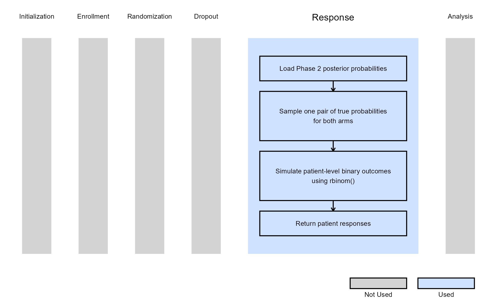

Consecutive Studies, Binary Outcome
Gabriel Potvin, Valeria A. G. Mazzanti, J. Kyle Wathen
February 16, 2026
ConsecutiveStudiesBinary.RmdThis example is related to both the Integration Point: Response - Binary Outcome and the Integration Point: Analysis - Binary Outcome. Click the links for setup instructions, variable details, and additional information about the integration points.
- Study objective: Two Arm Confirmatory
- Number of endpoints: Single Endpoint
- Endpoint type: Binary Outcome
- Task: Explore
Note: This example is compatible with both Fixed Sample and Group Sequential statistical designs. The R code automatically detects whether interim look information (LookInfo) is available and adjusts the analysis parameters accordingly.
Introduction
This example demonstrates the computation of conditional probability of success in consecutive studies by using custom R scripts for the Response (Patient Simulation) and the Analysis integration points of East Horizon. It features a sequential trial program involving a Phase 2 trial followed by a Phase 3 trial, both with the same binary endpoint.
We show how Phase 2 results are simulated, saved, and then used as the prior data for Phase 3, allowing the Phase 3 patient outcomes to be generated only conditional on the Phase 2 trial’s success. This approach illustrates how simulations can mimic using an earlier trial’s data to directly inform subsequent trials, which is particularly valuable in drug development where Phase 3 studies are expensive and resource-intensive.
Why do we need R Integration for this example?
The decision to move forward with certain trials is relying more and more on the computation of the trial’s probability of success and the optimization of parameters that will boost it. To identify a realistic probability of success, though, can be difficult without having sufficient prior knowledge of the treatment in question. Data from previous historical studies is not always readily accessible to many clinicians that are tasked with this type of decision-making.
Simulations and creating this prior data through the combination of R functions with the East Horizon product can help alleviate this gap in knowledge and help clinical teams decide to invest in an entire program of trials (e.g. a Phase 2 followed by a Phase 3) rather than just one confirmatory trial (e.g. only move forward with a Phase 3).
By combining the R functions described below with the East Horizon native inputs, users are able to simulate data taking into account uncertainty around their scenario’s assumptions, pass generated data from the first trial in a program to the inputs of the second trial’s simulation, and then compute the probability of success of each simulated trial as well as the program’s probability of success overall. Users will also continue to benefit from East Horizon’s output visualizations for each trial – with the caveat that the Probability of Success & Conditional Probability of Success metrics will be labeled as “Power” in the native outputs of East Horizon.
R Integration is required for this type of trial design because East Horizon does not natively support transferring results from one trial’s simulations to another. The R functions created for this example enable users to leverage simulated data from one simulation into a following simulation’s inputs.
What do the R functions do?
In the R directory of this example you will find the following R files:
-
SimulatePatientOutcomeBinaryWithAssurance.R
This R file is used for the Response (Patient Simulation) integration point of the Phase 2 study. It contains a function that generates patient outcomes for a binary response trial while incorporating uncertainty about the true response rates, for the control and treatment arms, by sampling them from a Beta distribution prior.
For more information on this function, see the Response (Patient Simulation) Integration Point section of the Phase 2 study below.
-
AnalyzeUsingEastManualFormula.R
This R file is used for the Analysis integration point of the Phase 2 study. It contains a function that performs the analysis the same way as East Horizon, but additionally saves relevant outputs required for the Phase 3 simulation.
For more information on this function, see the Analysis Integration Point section of the Phase 2 study below.
-
SimulatePatientOutcomeBinaryWithAssurancePh3.R
This R file is used for the Response (Patient Simulation) integration point of the Phase 3 study. It contains a function that generates patient outcomes for a binary response trial. This time, we sample the true response rates from the posterior distribution obtained from the Phase 2 simulations.
For more information on this function, see the Response (Patient Simulation) Integration Point section of the Phase 3 study below.
Step-by-Step Instructions
Before starting, make sure you have the required tools and files.
- East Horizon
- Download R Files from our public Github repo: AnalyzeUsingEastManualFormula.R, SimulatePatientOutcomeBinaryWithAssurance.R, and SimulatePatientOutcomeBinaryWithAssurancePh3.
New Project Page
- On East Horizon, create a new project with a binary endpoint.

In this example, we will create two different input sets: one for the Phase 2 study and one for the Phase 3 study.
Phase 2 Study
New Input Set Page
- Navigate to the Inputs tab, and create a new input set using the Explore task. Rename the input set as “Phase 2”.

Design Page
- Within the input set you just created, navigate to the Design page and enter the Phase 2 details, e.g. sample size. Then select the “User Specified – R” option in the Test field.

Click the “+” icon next to “User Specified - R” to open the R Integration pop-up window.
Click on “Select File” and then on “Continue”.

Upload and then select the file AnalyzeUsingEastManualFormula.R.
Check that the correct file has been imported and the correct Function Name has been specified by the system. Click on the “Save” button to exit the R Integration details window.

Response Page
- Navigate to the Response page and then select “User Specified – R” in the Distribution field.

Click on the “+” icon next to “User Specified - R” to open the R Integration pop-up window.
Click on “Select File” and then on “Continue”.

Upload and then select the file SimulatePatientOutcomeBinaryWithAssurance.R.
Check that the correct file has been imported and the correct Function Name has been specified by the system. Note that the User Parameter variables have been automatically pulled from the R function that was imported.
Fill the parameter values to define the Beta distribution that you would like to use to generate patient outcome data for the Phase 2 trial. In our case, we use the example values below. See the Response Integration Point section below for more information about these variables.
Note that in this example, we used Beta priors but you could use any other distribution by changing the R code to sample from a different one on lines 29 and 30 of the file.
- Click on the “Save” button to exit the R Integration details window.
Simulation Setup Page
- Specify the number of simulation runs as needed. You can select any number from the dropdown list as you require. For the Phase 2 input set, it is recommended to run as many simulations as possible (e.g., 20,000). This is because the Phase 3 simulation will only use data from successful Phase 2 trials, so the more simulations you run, the larger the pool of usable response rates for Phase 3’s data generation.

- Check the box to “Generate Data File for All Simulated Models”.

- Click the “Save & Simulate” button.

- Confirm by clicking on “Simulate” in the pop-up window, and wait for the simulation runs to finish.

Results Page
- Navigate to the Results tab, then check whether the Phase 2 simulation failed or was completed by looking at the Status column.

- If the simulation failed, open the Log window to see if there are any helpful error messages.
- Click on the “?” icon in the top right corner of your screen.

- Click on “Log”.

- Identify any errors that appear. For example:

- If the simulation has completed, click on the Result Set’s name to open the outputs within East Horizon. If you have multiple scenarios in your simulation, you will be prompted to label at least one scenario from the list by clicking the ribbon icon in the Favorites column and assigning it a name and color. Alternatively, you may also skip this step by selecting the “Skip” button in the bottom left corner.

- The Explore page of the results appears. You will notice a checkbox on the left side of each row in the table, below the heatmap. Click on the checkbox of the model you’d like to use as your first trial in your program. In our example, we chose the model that generated the data using our beta prior distributions, e.g.:

- Now click on the Download dropdown menu, that is in the top right of the screen, and the Summary Statistics option. Wait until the file is downloaded and rename it to Ph2_results.csv.

Files Page
- Navigate to the Files page and click on the Inputs folder.

- Click on “Upload” and select the file you just downloaded from East
Horizon. Alternatively, you can use the example file provided in the
Outputsdirectory of this example if you want to test the workflow with our example data. Make sure the file is renamed to “Ph2_results.csv” and placed in the Inputs folder if you intend to use the R script as provided. If you prefer a different file name, you can update the script accordingly.
Phase 3 Study
New Input Set Page
- In East Horizon, navigate to the Inputs tab again, and create a new input set using the Explore task. Rename the input set as “Phase 3”.
Design Page
- Within the input set you just created, create an input card, and enter the Phase 3 details, e.g. sample size. For Phase 3, it is not necessary to customize the Analysis element unless you want to use its simulation data for an additional phase.
Response Page
- Navigate to the Response page, create an input card, and then select “User Specified – R” in the Distribution field.
Click on the “+” icon next to “User Specified - R” to open the R Integration pop-up window.
Click on “Select File” and then on “Continue”.
Select the file SimulatePatientOutcomeBinaryWithAssurancePh3.R.
Check that the correct file has been imported and the correct Function Name has been specified by the system.
- Click on the “Save” button to exit the R Integration details window.
Simulation Setup Page
- Simulate the input set the same way as described before. See Steps 15 to 18 for more information. However, for Phase 3, we recommend choosing a lower number of simulations (e.g., 10,000). This is because the simulation will fail when specifying a number of simulation higher than the number of successful Phase 2 trials. In our case, it was about 13,000.
Results Page
- Load the results as described before (see steps 19 to 21 for more information). In the Explore page of the results, hover over each cell in the heatmap to see a summary of the outputs. Because of our custom R scripts, the result printed as “Power” is actually now equivalent to the Conditional Probability of Success of the Phase 3 study, i.e., the probability that Phase 3 succeeds given that Phase 2 succeeded.

See the Results section below for more information.
Technical Information and Example Values
Phase 2 Study
For the Phase 2 study, we customize both Response and Analysis integration points. The figure below illustrates where everything fits within the R integration points of Cytel products, accompanied by flowcharts outlining the general steps performed by the R code.
Response (Patient Simulation) Integration Point
This endpoint is related to this R file: SimulatePatientOutcomeBinaryWithAssurance.R
Using the file above, the Response element of the Phase 2 study is customized to generate patient outcomes for a binary response trial while incorporating uncertainty about the true response rates by sampling them from prior distributions. Here, we use a Beta distribution prior. However, you could use any other distribution by changing the R code to sample from a different one on lines 29 and 30 of the file.
For each arm, the true response probability is drawn from a Beta distribution:
where , , , are the parameters of the Beta distributions and can be user-defined. Refer to the table below for the values of the user-defined parameters and some example values.
| User parameter | Definition | Example Value |
|---|---|---|
| dParameter1Ctrl | Parameter 1 of the Beta distribution for control arm () | 25 |
| dParameter2Ctrl | Parameter 2 of the Beta distribution for control arm () | 75 |
| dParameter1Exp | Parameter 1 of the Beta distribution for experimental arm () | 40 |
| dParameter2Exp | Parameter 2 of the Beta distribution for experimental arm () | 60 |
These two true response probabilities are returned as outputs TrueProbabilityControl and TrueProbabilityExperimental at the end of the R function. This is important because this is why these variables will then be included in the SimData list of variables and picked up in the Phase 2 Analysis script, and finally appear in the Phase 2 results CSV file, which is downloadable from East Horizon. They are later reused in Phase 3 by loading the saved values. See Steps 24 and 25 of the Step-by-Step Instructions section for more information on the loading process.
Then, each patient’s binary outcome is drawn from a Bernoulli distribution:
where is the binary response, and is the true response probability ( or depending whether the patient is in the control or experimental arm).
Analysis Integration Point
This endpoint is related to this R file: AnalyzeUsingEastManualFormula.R
The analysis is the same as East Horizon, based on formulas of the Chapter 24: Binomial Superiority Two‐Sample from the East manual (24.2). No user-defined parameter is required for this integration point.
Test Statistic:
Where:
- and are the observed response rate at the jth interim look in the treatment and control groups, respectively.
- and are the numbers of patients at the jth interim look in the treatment and control groups, respectively.
- is the pooled response rate estimate.
In the R script, the TrueProbabilityControl and TrueProbabilityExperimental that were generated in the Response section are loaded from SimData outputs, and returned at the end function. This is important because these variables will appear in the Phase 2 results and will be saved to a CSV file. They will later be reused in Phase 3 by loading the saved values as the input for the response generation step in the simulations. See Steps 24 and 25 of the Step-by-Step Instructions section for more information on the loading process.
Phase 3 Study
For Phase 3, we customize the Response integration point only. The figure below illustrates where everything fits within the R integration points of Cytel products, accompanied by flowcharts outlining the general steps performed by the R code.

Response (Patient Simulation) Integration Point
This endpoint is related to this R file: SimulatePatientOutcomeBinaryWithAssurancePh3.R
Using the file above, the Response element of the Phase 3 study is
customized to generate patient outcomes for a binary response trial
while incorporating uncertainty about the true response rates by
sampling them from the posterior distribution obtained from the
successful Phase 2 simulated trials. In this case, the
LoadData function reads the Phase 2 results CSV file and
extracts pairs of true control and experimental response probabilities
from trials that achieved efficacy. Each simulated Phase 3 trial then
samples one pair and uses these probabilities to generate patient-level
outcomes with rbinom().
See Steps 24 and 25 of the Step-by-Step Instructions section for more information about how to load your own results.
This part of the program simulation could also be replaced by including actual data from a previous Phase 2 trial to inform the Phase 3 simulation. This is, in practice, what one would do when deciding whether to move forward with the Phase 3 trial once the Phase 2 completes and the data has been collected and analysed.
Results
By simulating the entire program, this example helps decision-makers that are investigating whether it will be worth investing in the program, as a whole, including a smaller Phase 2 trial to precede a larger Phase 3 trial. This program could be compared to running simply the Phase 3 trial with a vague prior distribution, like perhaps the one used in our example for the Phase 2 simulation, or running the Phase 3 trial without prior knowledge and only an assumed value for the response rates of the control and treatment arm.
When comparing these options through simulating each scenario, we noticed that the Conditional Probability of Success of the combined program was about 10% higher than the Probability of Success of only running a Phase 3 trial with a vague prior distribution. This suggested that, with the assumptions included in our example, it was indeed worth investing further resources into a small Phase 2 before running a Phase 3.
To extend this analysis, one could also compute the Probability of Success of the entire program by combining the Probability of Success of the Phase 2 with the Probability of Success of the Phase 3, and then compare this new metric to the original Probability of Success of running only a Phase 3 trial. This may give clinical teams even more oversight into the benefits of committing to a more expensive and longer program for the higher chance of proving their treatment is working as expected, and that the treatment arm’s patients indeed show health benefits over the control arm’s patients.